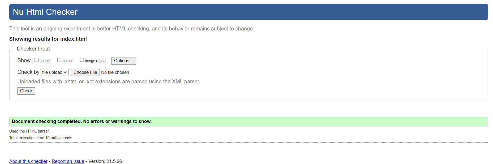
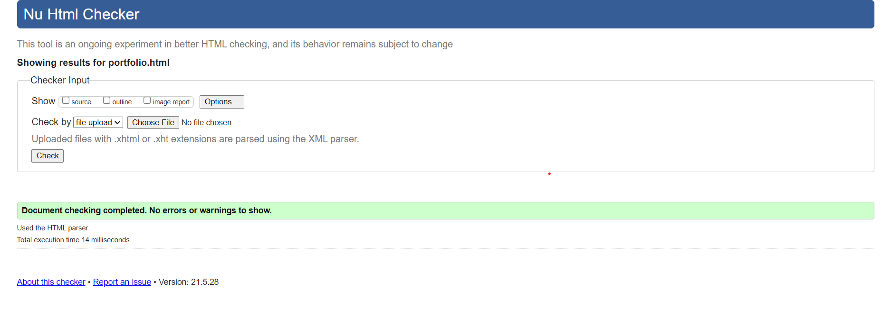
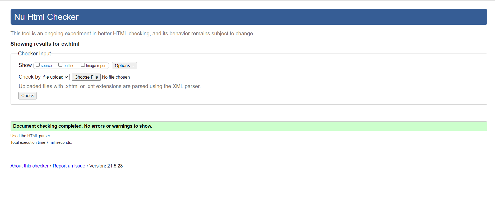
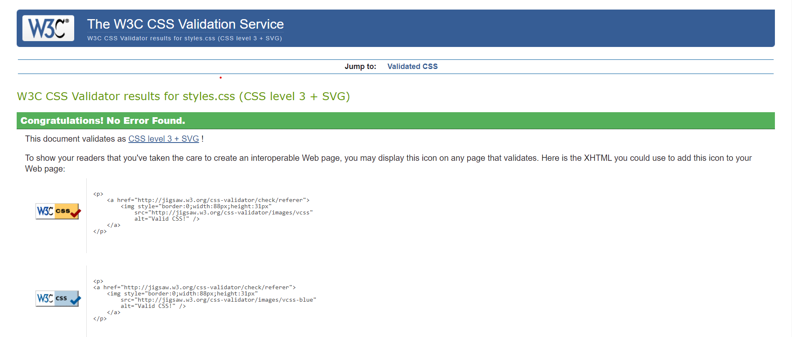
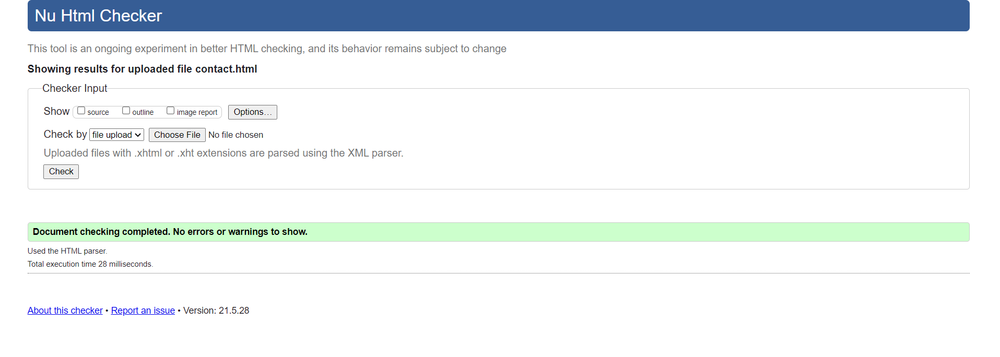

Web Development means the building and maintenance of websites. It is the creation of a dynamic Web application. Web Pages are made by HTML,CSS,Javascript. I started learning HTML and CSS the day I got admitted to this college. The Burning Curiosity of learning HTML CSS coding lead me to join NAMI college, dream to Become a Software Developer, It could be successful only with the help of my teachers. This assignment was given to us as a first-term test. Facing errors and the problem was common but my respected sir Mr.Ankit Thapa helps me during this period by taking online classes.
In this course of doing the assignment I had some errors in the Menu Bar, In the responsive view, the Ham Burger icon was not working on click but the Menu bar was hiding inside the hamburger that's why small use of javascript can be seen at the end of each HTML pages. I also had some problems in Github while uploading files but with the help of google, I solved them. The task given by the college was Index, Portfolio, CV, Contact and Report pages. The Design of the Page is My own and I took some knowledge from w3school. Although While doing the project I learned many more things about How to Make a Website and to use the code which I learned from my classes.
The html and css files were checked
    Creating my first website about my own was really intresting assignment.While doing this assignment I found many mistakes in Github, Menu Bar and in Responsive(Media Screen)which I learned while doing this assignment by taking helps from w3school. I would like to thanks to our college and teacher for the wonderful assignment.